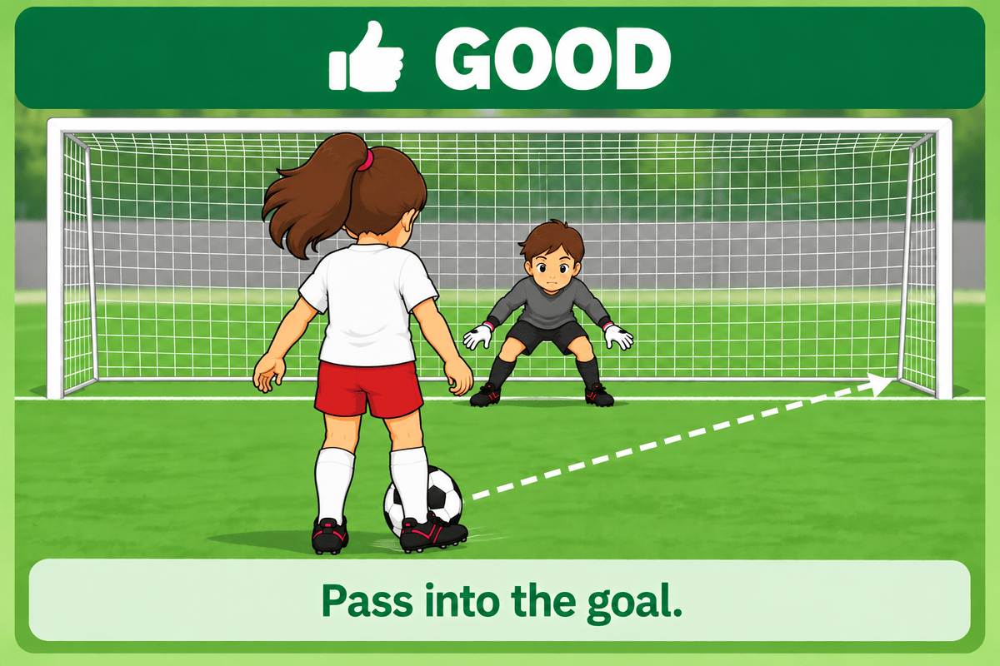
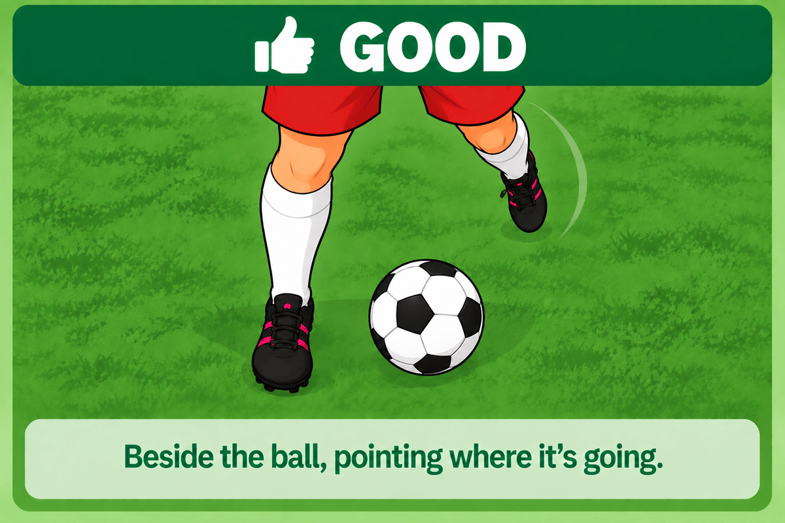
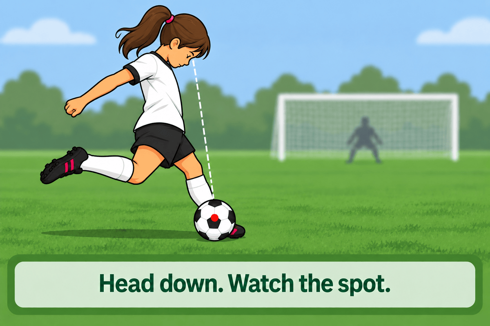
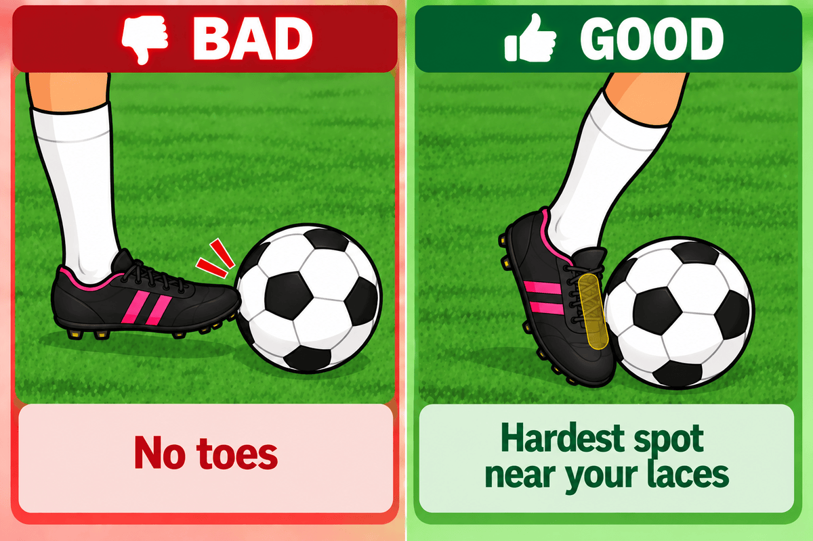
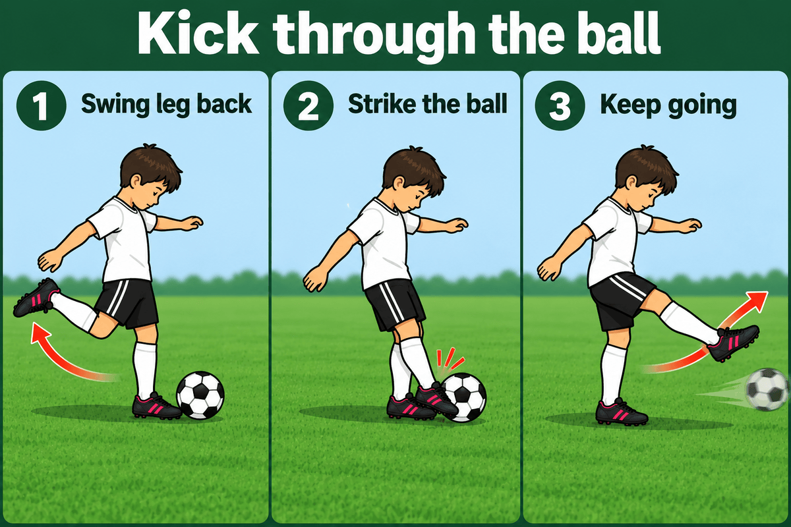

<title>Lesson 14 — Shooting Mechanics</title>
<link rel="preconnect" href="https://fonts.googleapis.com">
<link rel="preconnect" href="https://fonts.gstatic.com" crossorigin>
<link rel="stylesheet" href="https://fonts.googleapis.com/css2?family=Archivo:wght@600;700;800&family=Asap:wght@400;500;600&family=IBM+Plex+Mono:wght@500;600;700&display=swap">
<meta name="viewport" content="width=device-width,initial-scale=1">
<link rel="stylesheet" href="../../assets/site.css">
<link rel="stylesheet" href="../../assets/document.css">
<link rel="stylesheet" href="../../assets/print.css">

<header><div class="wrap">
  <div class="topline"><p class="kicker">Lesson 14</p>
    <a class="back" href="../../">&larr; Back Home</a></div>
  <h1>Shooting Mechanics</h1>
  <p class="meta"><span><b>Teaches</b> · how to strike the ball &mdash; the two kinds of shot,
      then the parts of the power shot</span>
    <span><b>Needs first</b> · nothing</span></p>

  <div class="callout">
    <p class="label">The big idea</p>
    <p class="lead"><span class="step">ACCURACY FIRST</span> <span class="sep">&rarr;</span>
      <span class="step">POWER SECOND</span></p>
    <p class="aside">Avoid 100% power. Placement, then technique, then power &mdash; in that
    order, every time.</p>
  </div>
</div></header>

<!-- ══════════ ACCURACY ══════════ -->
<section id="accuracy"><div class="wrap">
  <div class="sechead"><h2>Pass It Into The Goal</h2></div>
  <p class="lede-p">Use this most often. It is the shot we want nearly every time we are close
  enough to take it.</p>

  <figure class="photo-fig">
    
  </figure>

  <div class="says" style="margin-top:20px">
    <div class="say big"><span class="title">What to hit it with</span>
      <span class="quote">&ldquo;Side of your foot.&rdquo;</span>
      <p class="after">The same foot you pass with. You are passing the ball into the goal.</p></div>
    <div class="say"><span class="title">Where to put it</span>
      <span class="quote">&ldquo;Where the goalie can&rsquo;t reach.&rdquo;</span>
      <p class="after">Aim for the spot that is hard to get to, not for the goal in general
      &mdash; the goalie is standing in the middle of that.</p></div>
    <div class="say"><span class="title">How high</span>
      <span class="quote">&ldquo;Along the ground.&rdquo;</span>
      <p class="after">Most goalies this age step; they do not dive yet. A ball on the grass in
      the corner is somewhere their feet cannot get to in time.</p></div>
  </div>

  <p class="rule">You don&rsquo;t have to beat the goalie by a lot. You just have to put the ball
  somewhere they can&rsquo;t reach.</p>
</div></section>

<!-- ══════════ POWER — the five parts ══════════
     Presented in the order the kick is built. The order to TEACH them in is
     different, and it is its own section further down. -->
<section id="power"><div class="wrap">
  <div class="sechead"><h2>The Power Shot</h2></div>
  <p class="lede-p">Use this when you are far away &mdash; far enough that a side-foot pass will
  not get there. Everything below is how that shot is hit.</p>
</div></section>

<section id="plant-foot"><div class="wrap">
  <div class="sechead"><h2>Plant Foot</h2></div>

  <figure class="photo-fig">
    
  </figure>

  <div class="says" style="margin-top:20px">
    <div class="say big"><span class="title">Where it goes</span>
      <span class="quote">&ldquo;Next to the ball.&rdquo;</span>
      <p class="after">Your non-kicking foot, right beside it.</p></div>
    <div class="say"><span class="title">Which way it points</span>
      <span class="quote">&ldquo;Point it where the ball is going.&rdquo;</span>
      <p class="after">Roughly is enough. The plant foot aims the shot.</p></div>
    <div class="say"><span class="title">The common mistake</span>
      <span class="quote">&ldquo;Too far away and you lose both.&rdquo;</span>
      <p class="after">A plant foot out of reach costs the accuracy <i>and</i> the power &mdash;
      you end up stretching at the ball instead of striking it.</p></div>
  </div>
</div></section>

<section id="eyes"><div class="wrap">
  <div class="sechead"><h2>Eyes On The Ball</h2></div>

  <figure class="photo-fig">
    
  </figure>

  <div class="says" style="margin-top:20px">
    <div class="say big"><span class="title">Before the shot</span>
      <span class="quote">&ldquo;Peek at the goal first.&rdquo;</span>
      <p class="after">Look up, pick where it is going, and then stop looking at it.</p></div>
    <div class="say"><span class="title">During the shot</span>
      <span class="quote">&ldquo;Head down. Watch the spot.&rdquo;</span>
      <p class="after">Pick a spot on the ball &mdash; the middle &mdash; and hit it exactly where
      your eyes are looking.</p></div>
    <div class="say"><span class="title">Why the middle</span>
      <span class="quote">&ldquo;The middle sends the most force.&rdquo;</span>
      <p class="after">Hit the centre of the ball and all of the kick goes into it.</p></div>
  </div>
</div></section>

<section id="hard-foot"><div class="wrap">
  <div class="sechead"><h2>Hard Foot</h2></div>
  <p class="lede-p">The coach word is <i>lock your ankle</i>. What the kids hear is <b>hard
  foot</b>.</p>

  <div class="says" style="margin-top:18px">
    <div class="say big"><span class="title">The whole thing</span>
      <span class="quote">&ldquo;Toes down. Hard foot.&rdquo;</span>
      <p class="after">Point the toes at the ground and keep the ankle stiff. Don&rsquo;t let the
      foot flop when it hits the ball.</p></div>
    <div class="say"><span class="title">Why it matters</span>
      <span class="quote">&ldquo;Hard foot, hard shot.&rdquo;</span>
      <p class="after">A floppy foot folds back on contact and the kick goes into the ankle
      instead of the ball.</p></div>
  </div>

  <p class="note"><b>Demonstrate it.</b> Let your own foot flop and kick a ball &mdash; it goes
  nowhere. Lock it and kick the same ball. They will see it before you finish explaining it.</p>
</div></section>

<section id="laces"><div class="wrap">
  <div class="sechead"><h2>Kick With Your Laces</h2></div>

  <figure class="photo-fig">
    
  </figure>

  <div class="says" style="margin-top:20px">
    <div class="say big"><span class="title">What hits the ball</span>
      <span class="quote">&ldquo;No toes.&rdquo;</span>
      <p class="after">The hardest spot on your foot &mdash; the bone up near your laces.</p></div>
    <div class="say"><span class="title">Make them find it</span>
      <span class="quote">&ldquo;Touch the bone.&rdquo;</span>
      <p class="after">Have them press it with a hand before they kick anything. A part of the
      foot they have touched is a part they can aim with.</p></div>
  </div>
</div></section>

<section id="through"><div class="wrap">
  <div class="sechead"><h2>Kick Through The Ball</h2></div>
  <p class="lede-p">The follow through. This is the one that turns a clean strike into a
  hard one.</p>

  <figure class="photo-fig">
    
  </figure>

  <div class="says" style="margin-top:20px">
    <div class="say big"><span class="title">The whole idea</span>
      <span class="quote">&ldquo;Don&rsquo;t kick AT the ball. Kick THROUGH the ball.&rdquo;</span>
      <p class="after">We are kicking to a spot past the ball, and the ball just gets in the
      way.</p></div>
    <div class="say"><span class="title">What it feels like</span>
      <span class="quote">&ldquo;Imagine the ball isn&rsquo;t there.&rdquo;</span>
      <p class="after">Don&rsquo;t stop your foot when it reaches the ball &mdash; swing it through
      and finish with the kicking foot out in front of you.</p></div>
    <div class="say"><span class="title">Another way to say it</span>
      <span class="quote">&ldquo;Kick the top off the sandcastle.&rdquo;</span>
      <p class="after">Pretend there is a sandcastle right behind the ball and you want to take the
      top off it. Your foot has to keep going to get there &mdash; so it goes through the ball on
      the way.</p></div>
  </div>

  <p class="note"><b>The demo that sells it.</b> Point at the ball: <i>&ldquo;I&rsquo;m not trying
  to kick to here.&rdquo;</i> Point a foot or two beyond it: <i>&ldquo;I&rsquo;m trying to kick to
  <u>here</u>. The ball just gets in the way.&rdquo;</i> Then swing through it.</p>
</div></section>

<!-- ══════════ TEACHING ORDER ══════════
     Deliberately not the order the kick happens in. Each step only makes sense
     once the one before it is there. -->
<section id="order"><div class="wrap">
  <div class="sechead"><h2>How To Teach It</h2></div>
  <p class="lede-p">Break it across practices so the advanced parts don&rsquo;t overcomplicate the
  basics. This order builds each idea on the one before it, rather than following the physical
  sequence of the kick.</p>

  <p class="chain">LACES &rarr; HARD FOOT &rarr; PLANT FOOT &rarr; EYES &rarr; THROUGH THE BALL</p>

  <div class="goals">
    <div class="goal"><span class="n">1</span><span class="t">Laces<br>what hits the ball</span></div>
    <div class="goal"><span class="n">2</span><span class="t">Hard foot<br>make it solid</span></div>
    <div class="goal"><span class="n">3</span><span class="t">Plant foot<br>where the other foot goes</span></div>
    <div class="goal"><span class="n">4</span><span class="t">Eyes<br>clean contact</span></div>
    <div class="goal"><span class="n">5</span><span class="t">Through the ball<br>the actual power</span></div>
  </div>

  <p class="footnote">First make good contact, then make it powerful, then refine the whole-body
  technique &mdash; which is everything below.</p>
</div></section>

<!-- ══════════ ADVANCED ══════════ -->
<section id="advanced"><div class="wrap">
  <div class="sechead"><h2>Later, Or For Advanced Players</h2></div>
  <span class="optional">later practices</span>
  <p class="lede-p">Each of these is a correction to a strike that already works. Bring them out
  after the five above, not alongside them.</p>

  <div class="says" style="margin-top:18px">
    <div class="say"><span class="title">Counter-weight arm</span>
      <span class="quote">&ldquo;Right foot, left arm out.&rdquo;</span>
      <p class="after">The opposite arm extends as you strike. It balances the swing.</p></div>
    <div class="say"><span class="title">Where you hit the ball</span>
      <span class="quote">&ldquo;Hit the middle of the ball.&rdquo;</span>
      <p class="after">Through the middle gives a low, driven shot. Getting underneath it lifts it
      &mdash; so don&rsquo;t teach getting under it on purpose yet.</p></div>
    <div class="say"><span class="title">Shoot across the goalie</span>
      <span class="quote">&ldquo;Aim for the far corner.&rdquo;</span>
      <p class="after">Coming in from one side, the far corner is the target. Low and across the
      goalie is very hard to stop at this age.</p></div>
    <div class="say"><span class="title">Don&rsquo;t wait for the perfect shot</span>
      <span class="quote">&ldquo;If you have space, shoot.&rdquo;</span>
      <p class="after">They dribble until the window closes. The shot was there two touches
      ago.</p></div>
    <div class="say"><span class="title">Land on your kicking foot</span>
      <span class="quote">&ldquo;Let your kick pull you forward.&rdquo;</span>
      <p class="after">If you kick hard and stay planted on your other foot, you&rsquo;re often
      stopping your swing early and leaving power behind.</p></div>
    <div class="say"><span class="title">Body over the ball</span>
      <span class="quote">&ldquo;Chest over the ball.&rdquo;</span>
      <p class="after">Chest over it keeps the shot down; leaning backward sends it into the air.
      This is the single most useful correction for anyone blasting shots over the goal.</p></div>
  </div>
</div></section>

<!-- ══════════ RELATED DRILLS ══════════ -->
<section id="drills"><div class="wrap">
  <div class="sechead"><h2>Related Drills</h2></div>
  <p class="lede-p">Most obvious first. None of these are written up yet.</p>

  <div class="todo" style="margin-top:14px">
    <b>Post Shot</b> &mdash; a cone just inside each post. Goal = 1 point, into the post zone = 3,
    over the bar = 0. You cannot win by blasting, so the only way to score big is to aim. Serves
    <i>pass it into the goal</i>.
  </div>
  <div class="todo" style="margin-top:10px">
    <b>Two-touch finish</b> &mdash; touch one sets the ball, touch two places it. Fixes the panic
    shot by fixing the touch before it.
  </div>
  <div class="todo" style="margin-top:10px">
    <b>Distance shooting</b> &mdash; for the laces shot, far enough out that a side-foot pass will
    not reach. Nothing suitable written yet.
  </div>
</div></section>

<footer><div class="wrap footline">Lesson 14 &middot; Shooting Mechanics &middot; 10U<a class="back" href="../../">&larr; Back Home</a></div></footer>
